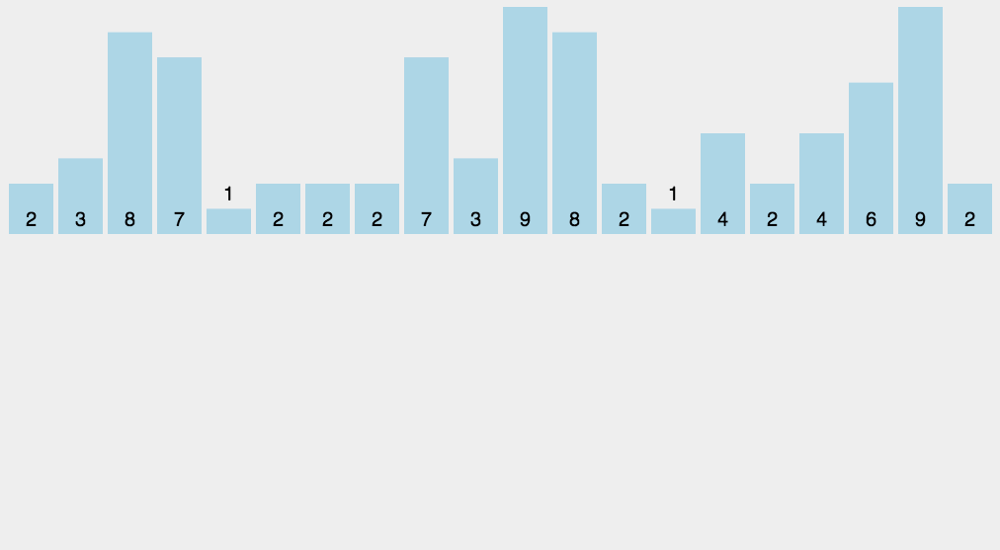

(1)算法简介
计数排序(Counting sort)是一种稳定的排序算法。计数排序使用一个额外的数组C，其中第i个元素是待排序数组A中值等于i的元素的个数。
然后根据数组C来将A中的元素排到正确的位置。它只能对整数进行排序。
(2)算法描述和实现
具体算法描述如下：
- <1>. 找出待排序的数组中最大和最小的元素；
- <2>. 统计数组中每个值为i的元素出现的次数，存入数组C的第i项；
- <3>. 对所有的计数累加（从C中的第一个元素开始，每一项和前一项相加）；
- <4>. 反向填充目标数组：将每个元素i放在新数组的第C(i)项，每放一个元素就将C(i)减去1。
